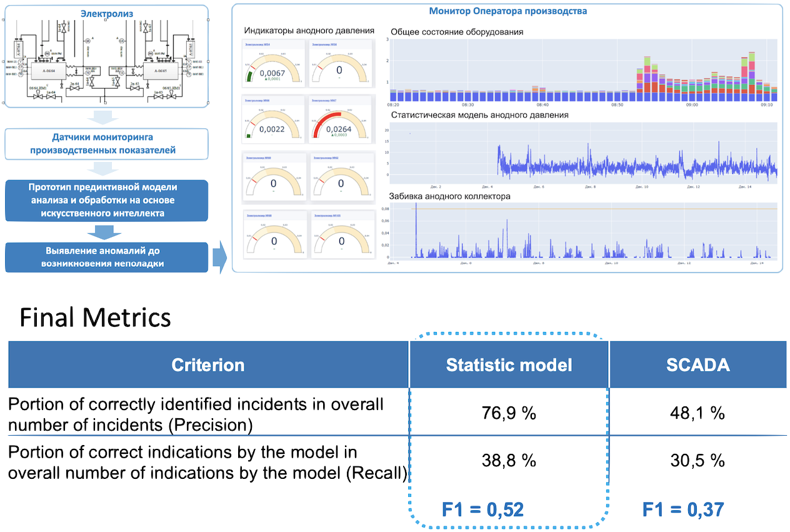
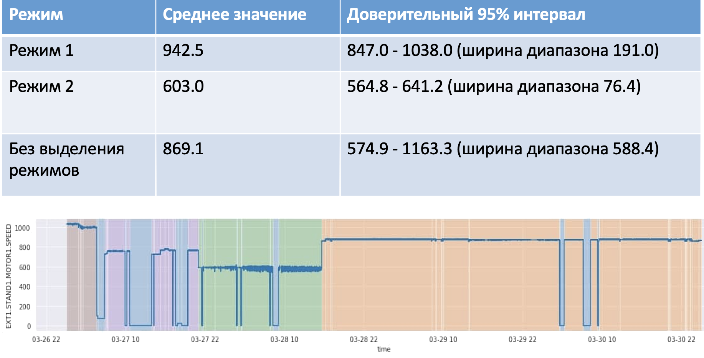
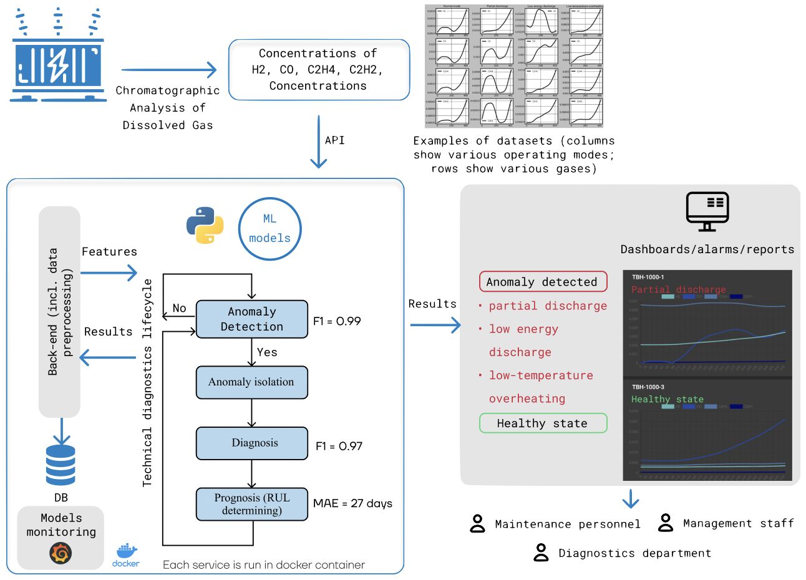
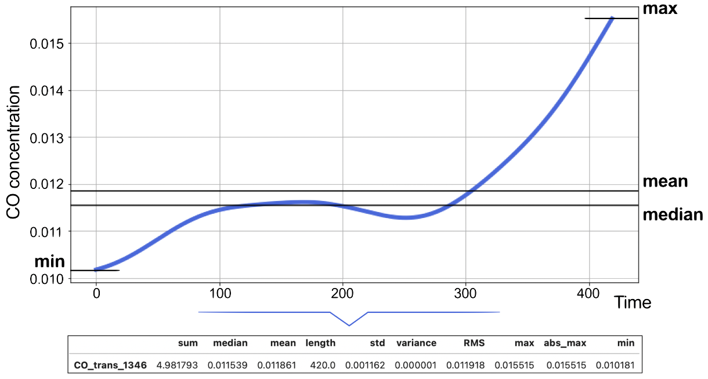
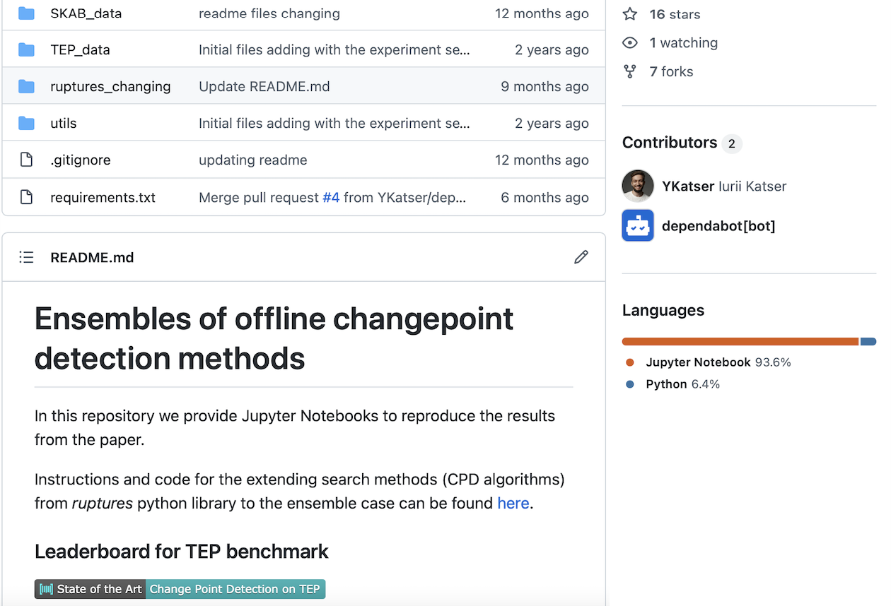
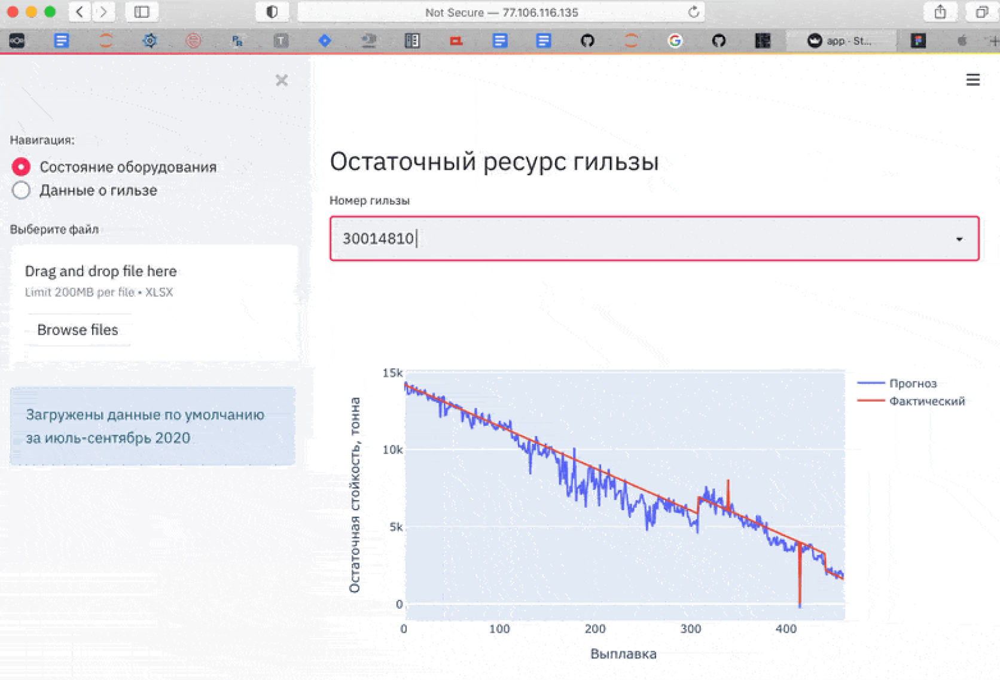
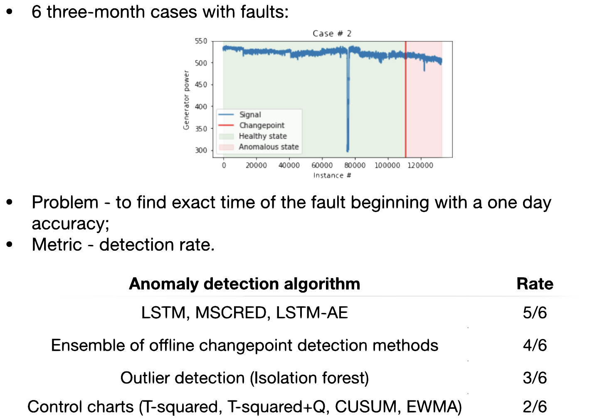
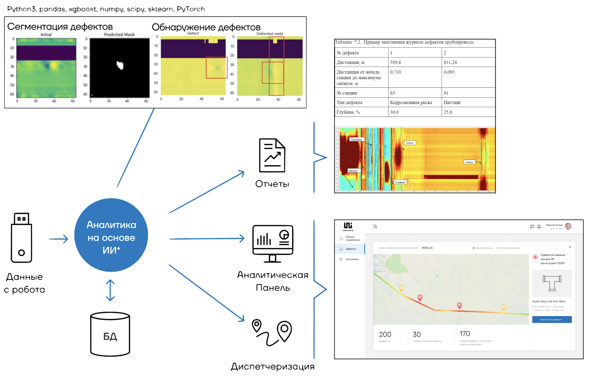

Реализованные проекты
(неполный список)
Сбор данных, разметка и создание публичного бенчмарка (SKAB - Skoltech Anomaly Benchmark) для обнаружения аномалий во временных рядах
Данные: временные ряды - технологические параметры работы оборудования
Созданные артефакты: репозиторий с датасетами, ноутбуками с методами обнаружения аномалий (бейзлайны), научная статья
Результаты: 130+ звезд на гитхабе, 7+ цитирований, выступление на OpenTalks.ai, научная статья
Стэк: python3, sklearn, numpy, pandas, keras | tex, git, trello, jupyter
Роль: DS/PM
Год: 2020-2022
Создание модели мониторинга технического состояния электролизеров и обнаружения аномалий (анодное, катодное давление)
Данные: временные ряды - технологические параметры работы оборудования, журналы ТОиР
Созданные артефакты: EDA, ноутбуки с результатами проверки гипотез, серриализованная модель, код для инференса пайплайна
Результаты: F1=0.52, статья, доклад на AI journey 2021, отчетная, проектная документация
Стэк: python3, keras, sklearn, pandas, numpy | git, jira, jupyter, pycharm
Роль: Team lead
Год: 2020-2021

Повышение качества вибродиагностики за счет выделения режимов работы по данным АСУ ТП
Данные: 1000+ временных рядов - технологические параметры работы оборудования
Созданные артефакты: EDA, ноутбук с результатами проверки гипотез, проектная и отчетная документация
Результаты: около 100 наборов данных, где снижение размера доверительного интервала было на 40% и более
Стэк: python3, pandas, sklearn, reptures | git, trello, jupyter
Роль: Team lead
Год: 2021

Обнаружение аномалий и определение остаточного ресурса трансформаторов АЭС
Данные: временные ряды - сигналы датчиков газов в масле, данные об аномалиях и данные об остаточном ресурсе оборудования
Созданные артефакты: EDA, ноутбук с результатами проверки гипотез, модели, вкеб-приложение, отчетная презентация
Результаты: Anomaly detection: Weighted F1=0.97, RUL: RMSE=27 дней, научные статьи (tba), статья на медиум
Стэк: python3, pandas, sklearn, catboost, keras, tsfresh, shap | git, trello, jupyter, streamlit
Роль: Team lead
Год: 2021

Создание модели корректировки значений для повышения точности показаний датчиков на производстве
Данные: данные АСУ ТП, данные лаборатории
Созданные артефакты: EDA, ноутбук с результатами проверки гипотез, отчетная презентация
Результаты: снижение ошибки между данными АСУ ТП и данными лаборатории на 40% до удовлетворительного уровня
Стэк: python3, pandas, sklearn, catboost, tsfresh, shap | git, trello, jupyter
Роль: Team lead
Год: 2021
Прогноз качества конечной продукции (плотность, прочность на сжатие/разрыв) по данным тех процесса и определение влияющих факторов
Данные: около тысячи образцов: данные по качеству из лаборатории и временные ряды - сигналы с контроллеров и датчиков, характеризующие процесс производства продукции
Созданные артефакты: EDA, ноутбук с результатами проверки гипотез, отчетная презентация
Результаты: гипотеза частично подтверждена (плотность и прочность на сжатие)
Стэк: python3, pandas, sklearn, catboost, tsfresh, shap | git, trello, jupyter
Роль: DS/PM
Год: 2021

Предиктивная аналитика на МСЗ: Разработка алгоритмов поиска аномалий в работе оборудования для процесса получения ядерного топлива
Данные: временные ряды - технологические параметры работы оборудования, журналы ТОиР
Созданные артефакты: EDA, ноутбуки с результатами проверки гипотез, серриализованная модель процесса на основе LSTM-based NN, код для инференса пайплайна
Результаты: прототип системы предиктивной аналитики с алгоритмами обнаружения аномалий для различных типов оборудования, статья, научный доклад (tba), доклад на AI journey 2020, отчетная, проектная документация
Стэк: python3, keras, sklearn, pandas, numpy | git, jira, MLFlow, jupyter, pycharm
Роль: Team lead
Год: 2020-2021
Разработка модели прогноза температуры металла на установке печь-ковш (УПК)
Данные: данные плавки, значения датчиков
Созданные артефакты: EDA, ноутбук с результатами проверки гипотез, модель, веб-приложение, отчетная презентация
Результаты: прогноз температуры (MAPE~5%, RMSE~8°C), значимые факторы
Стэк: python3, pandas, sklearn, xgboost, tsfresh, shap | git, trello, jupyter, streamlit
Роль: Team lead
Год: 2020
Разработка и исследование ансамблирования методов offline changepoint detection, доработка библиотеки ruptures
Данные: SKAB (Skoltech Anomaly Benchmark), TEP (Tennessee Eastman process)
Созданные артефакты: репозиторий с .py модулями и ноутбуками с экспериментами, научная статья, документация
Стэк: python3, pandas, sklearn, numpy, ruptures, scipy | tex, git, trello, jupyter, pycharm
Роль: разработчик/DS
Год: 2020

Определение остаточного ресурса гильз кристаллизатора МНЛЗ и выявление влияющих факторов
Данные: данные плавки, технологические параметры установки, оценка остаточного ресурса гильз
Созданные артефакты: EDA, ноутбук с результатами проверки гипотез, модель, веб-приложение, отчетная презентация
Результаты: оценка количества плавок до замены гильзы, значимые факторы, статья на медиум, потенциальный экономический эффект $500k/год
Стэк: python3, pandas, sklearn, xgboost, tsfresh, shap | git, trello, jupyter, streamlit
Роль: Team lead
Год: 2020

Создание алгоритма обнаружения аномалий турбогенераторов АЭС на основе ансамбля offline changepoint detection procedures и выход на коренные причины
Данные: теплотехнические, вибрационные, электрические параметры агрегатов (200+ сигналов)
Созданные артефакты: EDA, preprocessing pipeline (очистка, генерация признаков на основе физики, отбор признаков, снижение размерностей), алгоритм обнаружения аномалий, алгоритм прогнозирования временных рядов на основе Holt-Winters.
Результаты: победа в предпилотных исследованиях Росатома
Стэк: Python3, sklearn, pandas, scipy, ruptures | git, trello, jupyter
Роль: DS
Год: 2019

Диагностика нефтяных трубопроводов с помощью машинного обучения (детекция и локализация дефекта, определение толщины стенки трубопровода)
Данные: магнитограммы с внутритрубных дефектоскопов (48 датчиков)
Созданные артефакты: EDA, код для автоматизированной разметки, preprocessing pipeline, регрессионная модель определения толщины стенки, серриализованная CNN для классификации участка трубопровода и класс для инференса в приложении
Результаты: 95% точность обнаружения дефектов на сбалансированной выборке, модель интегрирована в систему диагностики труб, MAPE=5% для модели обнаружения толщины стенки, научная статья, получение и реализация гранта "Старт"
Стэк: Python3, pandas, xgboost, numpy, scipy, sklearn, PyTorch | tex, git, trello, jupyter
Роль: разработчик/DS/PM
Год: 2018-2019

НИОКР по обзору и имплементации из научных статей алгоритмов обнаружения аномалий (Hotelling, Q-statistic, domain heuristics, Autoencoder, etc.) и прогнозирования временных рядов (ARIMA, Holt-Winters, LSTM-based NN, etc.) для наполнения системы предиктивной аналитики (СПА) и технической диагностики
Данные: временные ряды (данные оборудования АЭС)
Созданные артефакты: .py модули, отчеты о НИОКР, документация по использованию библиотек, слайды
Результаты: расширение функционала СПА, научная статья, получение и реализация гранта "Умник"
Стэк: python3, pandas, sklearn, numpy, scipy, keras | tex, git, jupyter, pycharm
Роль: разработчик/DS
Год: 2017-2018